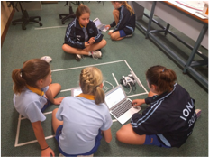
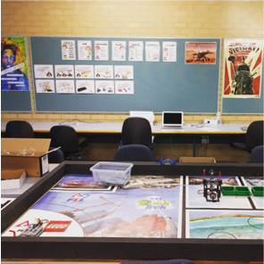
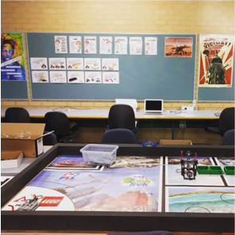

| Page 1 |
Learning One Step Ahead of Your Students

By Michael Graffin
The Robotic Rebels and
The Motherboards
(Perth, Western Australia)
blogs.ionaps.com/robotics

“Learning isn’t
linear, and
sometimes it can be
messy.”

Coach’s Corner

In late 2015, Iona Primary School won a FIRST LEGO League Robotics grant from
FIRST Australia, in partnership with Google. This grant has helped us to set up a small
LEGO Robotics program for 2016, which will enable 18 upper primary girls to
compete in the 2016 “Animal Allies” FIRST LEGO League competition. I am a first
year coach to The Robotic Rebels and The Motherboards.
Starting out. This year, with the benefit of a FIRST Australia grant, and the support of my
school leadership team, I found myself teaching an

extracurricular LEGO robotics program, preparing two teams for
the FIRST LEGO League (FLL) competition. I’d never worked
with these sophisticated robotics kits before, and I wasn’t sure
how the program would run in our school, let alone how I’d
teach it. After many hours of Internet research, watching
YouTube videos, and adapting teaching materials from
EV3Lessons.com & Carnegie Mellon University, I set up my
Google Classroom groups, and set to work.
Implementing robotics in a school. For me, good teaching is
about learning. It is about taking risks, experimenting with new
ideas, and collaborating with colleagues to improve the learning
experiences and outcomes of our students. As an educator, taking
risks and exploring new ideas is not an easy or straightforward
process; and without leadership support, you are likely to fail. It
is one thing to dream up an innovative idea, it is quite another to
implement it within your school community..
“Our Coaches and Mentors don’t have all the answers. We learn together.” Admitting that
“I don’t know, but let’s try it and find out” is not an easy thing for a teacher to say to their
students. Yet, this quickly proved to be a common refrain in my robotics class!
Learning can be messy. Learning isn’t linear, and sometimes it can be messy. I based my
teaching and learning approach on the idea that we could explore robotics concepts and skills
through guided problem solving and hands-on experimentation. If it doesn’t work, let’s keep
experimenting, and work out why. I was teaching out of my comfort zone, trying to stay one
step ahead of my students. I could hardly pretend to be the font of all knowledge – I was often
building and testing programs and mechanisms an hour before my students arrived for class.
Taking Risks. Learning how to teach robot programming and engineering with LEGO EV3
MINDSTORMS has been a steep, yet extremely rewarding learning curve. My teaching
programs are covered with notes about what worked, and what I’ll need to do differently next
year. Yet, by taking risks, experimenting with new ideas, and facing my fears – I am not only
growing as an educator, but I am making a difference in my students’ learning.
 
At the end of the day, that’s what teaching is all about.